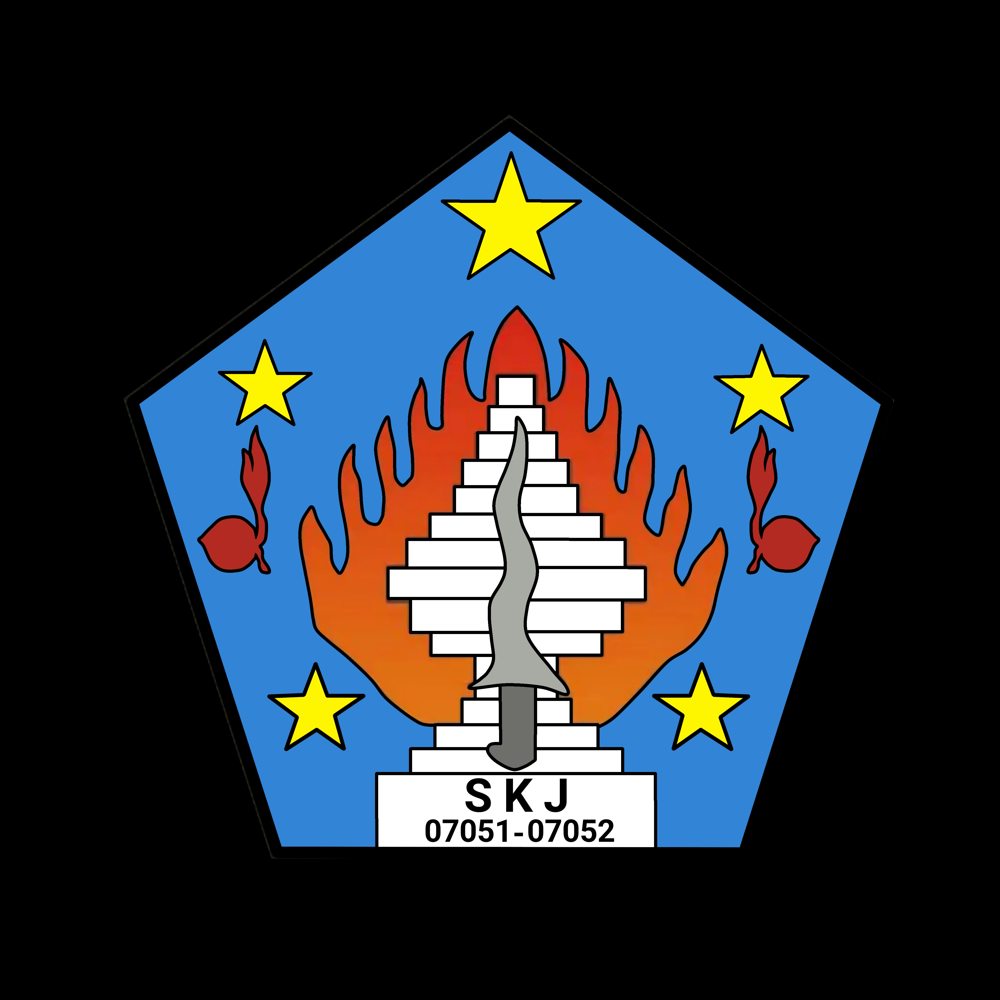
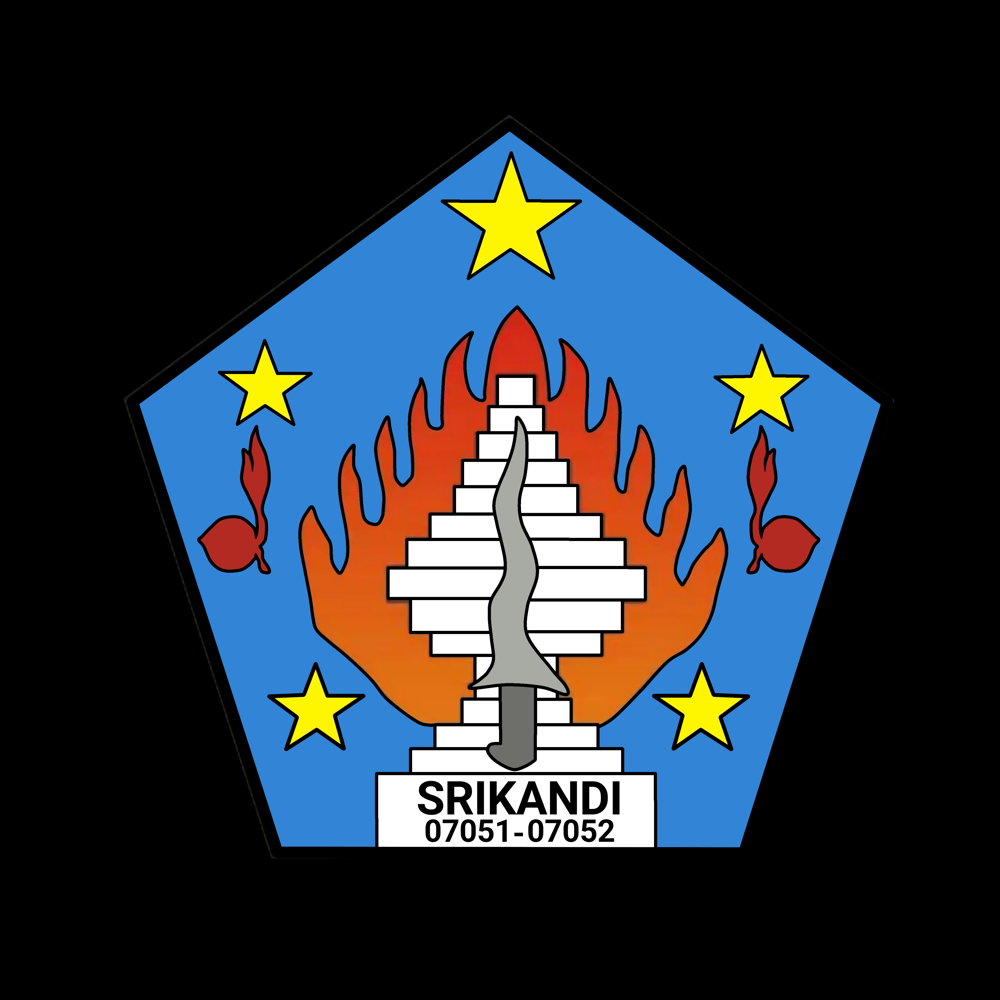

Ambalan Sunan Kalijaga
Ambalan Putra
Mengenal perjalanan panjang gerakan kepanduan dunia hingga lahirnya Gerakan Pramuka Indonesia. Sebuah perjalanan tentang pendidikan, persatuan, pengabdian, dan pembentukan karakter generasi muda.


Media pembelajaran digital milik Pramuka Maalma.
Ambalan Putra
Nama julukan pangkalan
PRAMUKA MAALMAAmbalan Putri
Gerakan Pramuka Indonesia merupakan nama organisasi pendidikan nonformal yang menyelenggarakan pendidikan kepramukaan di Indonesia.
Kata Pramuka merupakan singkatan dari Praja Muda Karana, yang memiliki arti jiwa muda yang suka berkarya.
Sebelum menjadi singkatan Praja Muda Karana, istilah Pramuka dikaitkan dengan kata Poromuko, yang berarti pasukan terdepan dalam suatu peperangan. Istilah ini diperkenalkan oleh Sri Sultan Hamengkubuwono IX.
Sebutan bagi anggota Gerakan Pramuka yang meliputi Siaga, Penggalang, Penegak, Pandega, serta kelompok anggota lainnya.
Proses pendidikan di luar lingkungan sekolah dan keluarga melalui kegiatan yang menarik, menyenangkan, sehat, teratur, terarah, dan praktis.
Sistem pendidikan kepanduan yang disesuaikan dengan keadaan, kepentingan, dan perkembangan masyarakat serta bangsa Indonesia.
Membentuk watak, akhlak, dan budi pekerti luhur melalui penerapan Prinsip Dasar Kepramukaan dan Metode Kepramukaan, terutama dalam kegiatan alam terbuka.
Perjalanan Baden-Powell dalam membangun gerakan kepanduan.

Baden-Powell atau BP merupakan tokoh utama yang mendirikan gerakan kepanduan modern. Gerakan yang dirintisnya kemudian berkembang ke berbagai negara, termasuk Indonesia.
Robert Stephenson Smyth Baden-Powell lahir di London, Inggris, pada tanggal 22 Februari 1857. Nama Baden-Powell merupakan nama keluarga dari ayahnya. Dalam komunitas kepanduan, ia lebih dikenal dengan nama Baden-Powell atau singkatannya, BP.
Ayahnya bernama Baden-Powell, seorang guru besar geometri di Universitas Oxford. Ibunya bernama Henrietta Grace Smyth. Ketika BP berusia tiga tahun, ayahnya meninggal dunia.
Pada tahun 1870, ibunya memasukkan BP ke Charterhouse School. Ia mendapatkan beasiswa karena kepandaiannya.
Di sekolah tersebut BP aktif dalam berbagai kegiatan ekstrakurikuler, seperti teater, marching band, melukis, klub menembak, olahraga, dan kegiatan lainnya. Karena keaktifan dan prestasinya, teman-temannya memberikan julukan khusus kepadanya.
Pada usia 19 tahun, BP bergabung dengan dinas kemiliteran atas bantuan pamannya, Kolonel Henry Smyth.
Selama berdinas, BP memperoleh banyak pengalaman, terutama ketika bertugas di Afrika. Ia berinteraksi dengan berbagai suku, antara lain Zulu, Ashanti, dan Matabele.
Dalam pengalaman tersebut ia memperoleh julukan yang menggambarkan kemampuannya untuk selalu waspada dan tidak mudah tertidur.
Pengalaman militernya kemudian dituangkan dalam buku berjudul Aids to Scouting yang terbit pada tahun 1899. Buku tersebut awalnya ditujukan sebagai panduan latihan bagi kalangan militer. Namun, ternyata buku itu juga diminati oleh anak-anak muda pada masa tersebut.
Setelah kembali dari tugas militernya, BP mendapat perhatian dari perkumpulan pemuda bernama Boy's Brigade. Mereka meminta BP mengembangkan metode pendidikan yang sebelumnya ia tulis dalam buku Aids to Scouting.
Pada tahun 1907, BP mengadakan perkemahan selama kurang lebih satu minggu di Pulau Brownsea, Inggris. Kegiatan ini melibatkan para pemuda yang mendapatkan pendidikan mengenai:
Perkemahan Brownsea dikenal sebagai perkemahan perintis gerakan kepanduan modern yang dipimpin langsung oleh Baden-Powell.
Atas saran rekan-rekannya, BP diminta menyusun buku yang ditujukan khusus bagi anak-anak muda. Buku tersebut kemudian diberi judul Scouting for Boys.
Buku ini pertama kali diterbitkan pada tanggal 15 Januari 1908. Isinya sangat diminati dan dicetak berulang kali, bukan hanya di Inggris, melainkan juga di berbagai negara.
Buku tersebut menjadi salah satu inspirasi penting bagi terbentuknya organisasi kepanduan di berbagai belahan dunia.
Pada tahun 1910, BP meletakkan jabatan dari dinas militer dengan pangkat terakhir Letnan Jenderal. Keputusan ini diambil karena ia ingin lebih fokus mengurus gerakan kepanduan yang semakin berkembang.
Meskipun karier militernya sedang cemerlang, BP memilih mengabdikan dirinya bagi pendidikan generasi muda melalui gerakan kepanduan.
Pada tahun 1912, BP melakukan perjalanan keliling dunia untuk melihat perkembangan kepanduan di berbagai negara menggunakan kapal laut.
Dalam perjalanan tersebut, ia berkenalan dengan seorang wanita bernama Olave St Clair Soames. Keduanya menikah pada tanggal 30 Oktober 1912. Dari pernikahan tersebut mereka dikaruniai tiga anak, yaitu Peter, Heather, dan Betty.
Pada awal perkembangannya, kepanduan lebih banyak diperuntukkan bagi anak laki-laki usia penggalang dan dikenal sebagai Boys Scouts.
Karena minat anak perempuan untuk mengikuti kepanduan juga besar, BP bersama adiknya, Agnes Baden-Powell, mengembangkan gerakan kepanduan putri yang dikenal sebagai Girl Guides pada tahun 1916.
Kelompok usia siaga dibentuk. Latihannya terinspirasi dari buku The Jungle Book karya Rudyard Kipling.
Kelompok usia penegak mulai dikembangkan dengan panduan buku Rovering to Success karya Baden-Powell.
Pada tahun 1920, BP mengundang perwakilan kepanduan dari berbagai negara untuk mengikuti perkemahan internasional yang dikenal sebagai Jambore Dunia Pertama.
Kegiatan tersebut diselenggarakan di Olympia, London, Inggris, dan diikuti oleh perwakilan dari 32 negara.
Pada kesempatan itu, Baden-Powell dianugerahi gelar Chief Scout of the World atau Bapak Pandu Sedunia.
Ia juga menerima gelar kebangsawanan dari Raja George V sehingga dikenal dengan gelar Lord Baden-Powell.
Pemikiran dan metode pendidikan Baden-Powell menjadi dasar perkembangan gerakan kepanduan modern. Gerakan tersebut menyebar ke seluruh dunia dan memberikan kontribusi terhadap pendidikan karakter generasi muda.
Dari organisasi kepanduan masa Hindia Belanda hingga Gerakan Pramuka.
Gerakan kepanduan di Indonesia telah dimulai sejak masa penjajahan Belanda. Pada tahun 1912, berdiri cabang Nederlandsche Padvinders Organisatie (NPO). Ketika Perang Dunia I berlangsung, organisasi ini memiliki kwartir besar sendiri dan kemudian berganti nama menjadi Nederlands-Indische Padvinders Vereeniging (NIPV) pada tahun 1916.
Pada tahun 1916 juga berdiri Javaansche Padvinders Organisatie (JPO), yang diprakarsai oleh Mangkunegara VII. Organisasi ini menjadi salah satu organisasi kepanduan yang diprakarsai oleh bangsa Indonesia.
Pada tahun 1920, organisasi kepanduan Muhammadiyah yang sebelumnya dikenal sebagai Padvinder Muhammadiyah berganti nama menjadi Hizbul Wathan (HW).
Selain itu, berbagai organisasi lain juga bermunculan, antara lain:
Semangat persatuan ant organisasi kepanduan mulai terlihat melalui terbentuknya PAPI, yaitu Persaudaraan Antara Pandu Indonesia.
PAPI merupakan federasi yang menghimpun beberapa organisasi kepanduan, antara lain INPO, SIAP, NATIPIJ, dan PPS.
PAPI dibentuk pada tanggal 23 Mei 1928. Namun, federasi ini tidak bertahan lama karena muncul keinginan untuk melakukan penggabungan organisasi secara lebih menyeluruh.
Pada tahun 1930 berdirilah Kepanduan Bangsa Indonesia (KBI), yang dirintis oleh tokoh-tokoh dari organisasi kepanduan seperti Jong Java Padvinderij, Pandu Kesultanan, dan organisasi lainnya.
Perkembangan organisasi tersebut kemudian mendorong terbentuknya Badan Pusat Persaudaraan Kepanduan Indonesia (BPPKI).
Antara tahun 1928 sampai 1935, semakin banyak organisasi kepanduan Indonesia bermunculan. Organisasi-organisasi tersebut memiliki latar belakang kebangsaan maupun keagamaan.
Untuk menggalang kesatuan dan persatuan, BPPKI merencanakan kegiatan jambore nasional. Rencana ini mengalami beberapa perubahan dalam waktu dan nama kegiatan.
Akhirnya disepakati nama Perkemahan Kepanduan Indonesia Oemoem atau PERKINO.
Yogyakarta, Indonesia
Pada masa Perang Dunia Kedua, tentara Jepang menyerang dan menguasai Indonesia. Pemerintah pendudukan Jepang melarang berbagai partai dan organisasi rakyat Indonesia, termasuk organisasi kepanduan.
Meskipun kegiatan organisasi secara resmi dilarang, semangat kepanduan tetap hidup dalam diri para anggotanya.
Upaya untuk menyelenggarakan PERKINO II tetap muncul, tetapi situasi perang dan larangan pemerintah pendudukan Jepang membuat pelaksanaannya tidak dapat berjalan sebagaimana direncanakan.
Sebulan setelah Proklamasi Kemerdekaan, sejumlah tokoh kepanduan berkumpul di Yogyakarta. Mereka sepakat membentuk Panitia Kesatuan Kepanduan Indonesia.
Panitia ini bertugas membentuk satu wadah organisasi kepanduan bagi seluruh bangsa Indonesia dan menyelenggarakan kongres.
Menghasilkan pembentukan Pandu Rakyat Indonesia.
Pandu Rakyat Indonesia didukung oleh para pemimpin dan tokoh kepanduan. Pemerintah Republik Indonesia mengakuinya sebagai satu-satunya organisasi kepanduan melalui Keputusan Menteri Pendidikan, Pengajaran dan Kebudayaan Nomor 93/Bag.A tanggal 1 Februari 1947.
Pandu Rakyat Indonesia menghadapi masa sulit akibat agresi dan serbuan Belanda. Pada peringatan kemerdekaan tanggal 17 Agustus 1948, kegiatan api unggun diselenggarakan di halaman Gedung Pegangsaan Timur 56, Jakarta.
Dalam situasi tersebut, senjata Belanda mengancam kegiatan kepanduan. Soeprapto gugur dalam peristiwa yang dikenang sebagai pengorbanan bagi gerakan kepanduan Indonesia.
Di daerah-daerah yang diduduki Belanda, Pandu Rakyat Indonesia dilarang berdiri. Kondisi ini mendorong lahirnya berbagai perkumpulan lain, seperti:
Setelah periode perjuangan bersenjata mempertahankan kemerdekaan berakhir, Pandu Rakyat Indonesia menyelenggarakan kongres kedua di Yogyakarta.
Kongres berlangsung pada tanggal 20–22 Januari 1950. Salah satu hasilnya adalah menerima konsep baru yang memberikan kesempatan kepada golongan khusus untuk menghidupkan kembali organisasi kepanduannya.
Dengan demikian, Pandu Rakyat Indonesia tidak lagi menjadi satu-satunya organisasi kepanduan di Indonesia.
Melalui Keputusan Menteri PP dan K Nomor 2344/KB tanggal 6 September 1951, pengakuan pemerintah terhadap Pandu Rakyat Indonesia sebagai satu-satunya wadah kepanduan dicabut.
Pada tanggal 16 September 1951, wakil-wakil organisasi kepanduan mengadakan konferensi di Jakarta dan membentuk Ikatan Pandu Indonesia (IPINDO) sebagai sebuah federasi.
Pada tahun 1953, IPINDO berhasil menjadi anggota organisasi kepanduan sedunia. IPINDO merupakan federasi bagi organisasi kepanduan putra.
Sementara itu, organisasi kepanduan putri memiliki dua federasi, yaitu:
Kedua federasi kepanduan putri tersebut pernah bersama-sama menyambut kunjungan Lady Baden-Powell ke Indonesia dalam perjalanannya menuju Australia.
Dalam rangka memperingati Proklamasi Kemerdekaan Republik Indonesia, IPINDO menyelenggarakan Jambore Nasional di Ragunan, Pasar Minggu, Jakarta.
Ragunan, Pasar Minggu, Jakarta
Sebagai wadah pelaksana kegiatan kepanduan, IPINDO merasa perlu menyelenggarakan seminar untuk membahas kemurnian dan kelestarian kehidupan kepanduan.
Seminar tersebut diadakan di Tugu, Bogor, pada bulan Januari 1957.
Hasil seminar berupa rumusan yang diharapkan dapat dijadikan pedoman bagi organisasi kepanduan di Indonesia dan menjadi dasar menuju persatuan gerakan kepanduan.
Pada bulan November 1958, pemerintah Republik Indonesia melalui Departemen Pendidikan, Pengajaran dan Kebudayaan mengadakan seminar di Ciloto, Bogor, Jawa Barat.
Topik yang dibahas adalah upaya menasionalisasi kepanduan agar gerakan tersebut semakin sesuai dengan kebutuhan bangsa Indonesia.
Jika Jambore untuk putra diselenggarakan oleh IPINDO di Ragunan, maka PKPI menyelenggarakan perkemahan besar putri yang dikenal dengan nama Desa Semanggi.
Kegiatan tersebut dilaksanakan pada tahun 1959 di Ciputat.
Pada tahun yang sama, IPINDO mengirimkan kontingennya untuk mengikuti Jambore Dunia di Mount Makiling, Filipina.
Perjalanan penyatuan kepanduan menjadi Gerakan Pramuka.
Gerakan Pramuka secara resmi lahir pada tahun 1961. Untuk memahami latar belakang kelahirannya, perlu melihat keadaan kepanduan Indonesia pada tahun 1960.
Saat itu terdapat banyak sekali organisasi kepanduan dengan latar belakang dan arah pembinaan yang berbeda-beda.
Jumlah organisasi yang banyak tersebut tidak sebanding dengan jumlah anggotanya. Keadaan ini menimbulkan kebutuhan untuk melakukan pembinaan dan penyatuan gerakan kepanduan secara nasional.
Pada tanggal 3 Desember 1960, ditetapkan Ketetapan MPRS Nomor II/MPRS/1960 tentang Garis-Garis Besar Pola Pembangunan Nasional Semesta Berencana.
Dalam ketetapan tersebut terdapat beberapa ketentuan yang berhubungan dengan pendidikan kepanduan:
Pada tanggal 9 Maret 1961, Presiden Soekarno mengumpulkan tokoh dan pemimpin gerakan kepanduan Indonesia di Istana Negara.
Presiden menyampaikan bahwa gerakan kepanduan perlu diperbarui. Metode dan aktivitas pendidikan perlu disesuaikan, sementara organisasi-organisasi kepanduan yang ada harus dilebur menjadi satu organisasi yang disebut Gerakan Pramuka.
Peristiwa ini kemudian dikenal sebagai Hari Tunas Gerakan Pramuka.
Presiden menunjuk panitia yang bertugas membantu pelaksanaan pembentukan Gerakan Pramuka. Tokoh-tokoh yang terlibat antara lain:
Keputusan Presiden Nomor 112 Tahun 1961 tanggal 5 April 1961 mengatur panitia pembantu pelaksana pembentukan Gerakan Pramuka.
Selanjutnya, Keputusan Presiden Republik Indonesia Nomor 121 Tahun 1961 tanggal 11 April 1961 mengatur panitia pembentukan Gerakan Pramuka.
Tentang Gerakan Pramuka
Panitia menyusun Anggaran Dasar Gerakan Pramuka yang kemudian disahkan melalui Keputusan Presiden Republik Indonesia Nomor 238 Tahun 1961 tanggal 20 Mei 1961.
Keputusan tersebut menetapkan Gerakan Pramuka sebagai organisasi yang menyelenggarakan pendidikan kepanduan bagi anak-anak dan pemuda Indonesia serta mengesahkan Anggaran Dasar Gerakan Pramuka.
Tanggal 20 Mei juga diperingati sebagai Hari Kebangkitan Nasional. Bagi Gerakan Pramuka, tanggal ini menjadi tonggak penting dalam pembentukan organisasi.
Peristiwa ini dikenal sebagai Hari Permulaan Tahun Kerja.
Istana Olahraga Senayan, Jakarta
Sejumlah organisasi kepanduan di Indonesia secara ikhlas menyatakan meleburkan diri ke dalam organisasi Gerakan Pramuka.
Peristiwa penyatuan tersebut dikenal sebagai Hari Ikrar Gerakan Pramuka.
Perkenalan resmi Gerakan Pramuka kepada masyarakat.
Pada tanggal 14 Agustus 1961 berlangsung pelantikan Mapinas, Kwarnas, dan Kwarnari di Istana Negara.
Pada hari yang sama juga dilaksanakan penganugerahan panji Gerakan Kepanduan Nasional Indonesia dan defile Pramuka untuk memperkenalkan Gerakan Pramuka kepada masyarakat luas.
Kegiatan ini tidak hanya dilaksanakan di Jakarta, tetapi juga di berbagai kota penting di Indonesia.
Di Jakarta, sekitar 10.000 anggota Pramuka mengikuti apel besar, pawai pembangunan, dan defile di hadapan Presiden Soekarno.
Sejak peristiwa tersebut, tanggal 14 Agustus diperingati setiap tahun sebagai Hari Pramuka.
Menurut Anggaran Dasar Gerakan Pramuka, pimpinan organisasi pada awal pembentukannya dipegang oleh Majelis Pimpinan Nasional (Mapinas), yang di dalamnya terdapat Kwartir Nasional dan Kwartir Nasional Harian.
Majelis Pimpinan Nasional
70 AnggotaKwartir Nasional
17 AnggotaKwartir Nasional Harian
8 AnggotaPada awalnya, susunan kepengurusan secara simbolis mengambil angka keramat 17-8-45, yang berkaitan dengan tanggal Proklamasi Kemerdekaan Indonesia.
Mapinas diketuai oleh Presiden Soekarno. Sri Sultan Hamengkubuwono IX menjadi wakil ketua, sedangkan Brigjen TNI Dr. A. Azis Saleh menjadi wakil ketua kedua.
Dalam Kwarnas, Sri Sultan Hamengkubuwono IX menjabat sebagai ketua dan Brigjen TNI Dr. A. Azis Saleh sebagai wakil ketua merangkap ketua Kwarnari.
Tentang Gerakan Pramuka
Pada tanggal 26 Oktober 2010, Dewan Perwakilan Rakyat mengesahkan Undang-Undang Nomor 12 Tahun 2010 tentang Gerakan Pramuka.
Undang-undang ini menjadi salah satu landasan hukum penyelenggaraan Gerakan Pramuka di Indonesia.
Berdasarkan ketentuan tersebut, pendidikan kepramukaan tidak lagi hanya dapat diselenggarakan oleh satu organisasi saja. Organisasi profesi juga dapat menyelenggarakan kegiatan kepramukaan sesuai ketentuan peraturan perundang-undangan.
Sejarah Pramuka mengajarkan bahwa persatuan, kedisiplinan, keberanian, dan pengabdian merupakan nilai penting dalam membentuk generasi muda yang tangguh.
Salam Pramuka!Rangkuman tahun-tahun penting perjalanan kepanduan.
22 Februari, London, Inggris.
Terbitnya buku yang awalnya ditujukan bagi latihan militer.
Perkemahan perintis kepanduan modern.
Diterbitkan pertama kali pada 15 Januari.
Fokus pada gerakan kepanduan.
Menikah dengan Olave St Clair Soames.
Pengembangan kepanduan putri dan kelompok usia siaga.
Pengembangan kelompok usia penegak.
Diselenggarakan di Olympia, London.
Awal organisasi kepanduan Belanda di Indonesia.
Perkembangan organisasi kepanduan di Indonesia.
Perubahan nama Padvinder Muhammadiyah.
Perkembangan organisasi kepanduan nasional.
Persaudaraan Antara Pandu Indonesia.
Perkembangan organisasi kepanduan nasional.
19–23 Juli di Yogyakarta.
Kongres 27–29 Desember di Surakarta.
Pandu Rakyat diakui melalui keputusan Menteri PP dan K.
Ikatan Pandu Indonesia dibentuk 16 September.
Ragunan, Jakarta, 10–20 Agustus.
Rumusan untuk kelestarian kepanduan.
Upaya menasionalisasi kepanduan.
Perkemahan besar putri di Ciputat.
Landasan perintisan pembentukan Pramuka.
Pidato Presiden Soekarno di Istana Negara.
Keppres Nomor 238 Tahun 1961.
Peleburan organisasi kepanduan.
Perkenalan resmi Gerakan Pramuka.
Undang-Undang tentang Gerakan Pramuka.
Pelajari kembali perjalanan sejarah melalui video berikut.
Video pembelajaran sejarah Pramuka.
Uji pemahamanmu mengenai materi sejarah kepanduan.